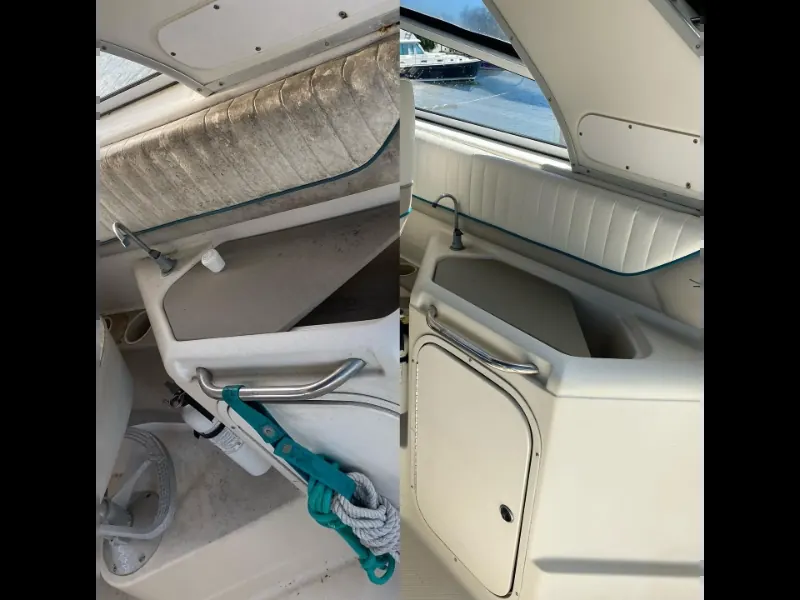
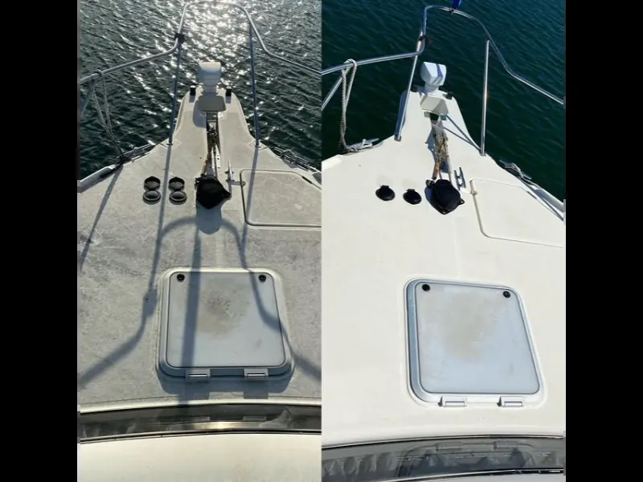
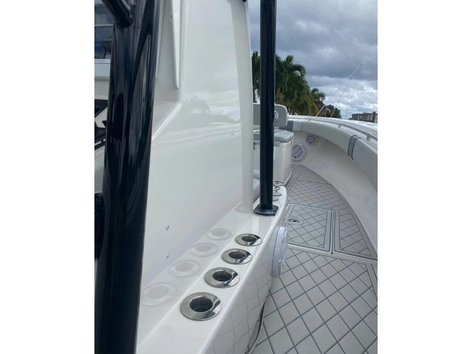

.webp)
Personalización
Calcomanías para Yates: Nombre, Línea de Flotación y Gráficos
Guía completa sobre vinilo marino en Cartagena: tipos, durabilidad
y cómo poner el nombre en tu embarcación correctamente.
7 min de lectura•Mayo 2026
Leer Artículo

Confort | Protección
Polarizado Nanocerámico para Yates: La Guía Definitiva
Reduce el calor hasta 70%, bloquea 99% de rayos UV y protege los
interiores de tu embarcación. Sin interferencia con GPS ni VHF.
9 min de lectura•Mayo 2026
Leer Artículo

Reparación | Fibra
Reparación de Fibra de Vidrio: Golpes, Grietas y Osmosis en
Cartagena
Guía técnica completa para identificar y reparar golpes, grietas,
delamination y osmosis en cascos de fibra de vidrio. Proceso y
costos reales.
12 min de lectura
•
Mayo 2026
Leer Artículo

Reparación | Osmosis
Osmosis en el Casco: Cómo Detectarla y Tratarla en Cartagena
El daño más silencioso en cascos de fibra. Aprende a detectar
ampollas, entender el proceso de tratamiento y prevenir la osmosis
en el Caribe colombiano.
11 min de lectura
•
Mayo 2026
Leer Artículo

Cubiertas | Comparativa
Teca Natural vs Cubierta Sintética: ¿Cuál Elegir en el Caribe?
Comparativa honesta entre teca natural y madera sintética para
yates en el clima tropical. Costos, mantenimiento, durabilidad y
cuál es mejor para cada tipo de embarcación.
13 min de lectura
•
Mayo 2026
Leer Artículo
Cubiertas | Mantenimiento
Mantenimiento de Cubierta de Teca: Aceite, Limpieza y Mastico en
el Caribe
Todo sobre el mantenimiento correcto de cubierta de teca: cuándo
aceitar, cómo limpiar, qué hacer cuando se vuelve gris y cómo
renovar el mastico en Cartagena.
12 min de lectura
•
Mayo 2026
Leer Artículo

Pintura | Protección Marina
Por Qué las Embarcaciones en el Mar Necesitan Antifouling
En Cartagena a 28 °C, un casco sin antifouling está colonizado en
semanas. Descubra el impacto real en combustible, velocidad y
estructura, y cómo International Paint y Hempel protegen su
inversión.
10 min de lectura
•
Mayo 2026
Leer Artículo
Pintura | Antifouling
Pintura Antifouling para Yates en Colombia: Cuándo y Qué Usar
Guía completa de pintura antifouling para el Caribe colombiano:
tipos (ablativa, dura, SPC), cuándo aplicarla, proceso y qué
productos funcionan mejor en Cartagena.
12 min de lectura
•
Mayo 2026
Leer Artículo

Protección | Ceramic
Ceramic Coating para Botes en Cartagena: ¿Vale la Pena?
Análisis honesto del ceramic coating marino: qué protege
realmente, cuánto dura en el Caribe, diferencias con PPF y para
qué tipo de embarcación es la inversión correcta.
11 min de lectura
•
Mayo 2026
Leer Artículo
FAQ | Cascos
¿Cada Cuánto Debo Limpiar el Casco de mi Yate o Velero?
Frecuencia recomendada de limpieza de casco en el Caribe según el
tipo de embarcación y su uso. Guía práctica para ahorrar
combustible y evitar daños.
7 min de lectura
•
Mayo 2026
Leer Artículo
FAQ | Fouling
¿Qué son las Incrustaciones Marinas y Por Qué Dañan tu Bote?
Aprende qué es el fouling marino, cómo afecta el casco de tu
embarcación y cómo prevenir daños con limpieza submarina
profesional en Cartagena.
8 min de lectura
•
Mayo 2026
Leer Artículo
Presupuesto | Mantenimiento
¿Cuánto Cuesta el Mantenimiento Anual de un Yate en Cartagena?
Precios reales de todos los servicios de mantenimiento para yates
de 30, 40 y 50 pies en el Caribe colombiano. Antifouling,
limpieza, pulido y más.
10 min de lectura
•
Mayo 2026
Leer Artículo
Interiores | Tapicería
Tapicería Náutica en Cartagena: Vinilo Marino, Cuero y Tela
Guía completa sobre materiales de tapicería náutica: diferencias
entre vinilo marino, cuero y Sunbrella, cómo limpiar cada uno y
cuándo restaurar o reemplazar.
8 min de lectura
•
Mayo 2026
Leer Artículo
Protección | Comparativa
Ceramic Coating vs PPF: ¿Cuál Elegir para tu Yate?
Comparación técnica entre las dos mejores protecciones para
embarcaciones: diferencias de protección, duración, costo y la
combinación óptima para el Caribe colombiano.
9 min de lectura
•
Mayo 2026
Leer Artículo

FAQ | Comparativa
¿Necesito Varar mi Bote para Limpiarlo?
Diferencias entre limpieza de casco en el agua con buzos y varada
en astillero. Cuándo usar cada opción y cuánto puedes ahorrar.
7 min de lectura
•
Mayo 2026
Leer Artículo
Calendario SEO 2026: 12 Artículos para Dominar "Limpieza de
Cascos"
Plan editorial anual con interlinking estratégico para posicionar
búsquedas transaccionales de limpieza de cascos, pulido de botes y
mantenimiento de yates.
9 min de lectura
•
Mayo 2026
Ver Calendario
PPF | Guía Técnica
Protegiendo tu Embarcación en Cartagena
Guía completa sobre Paint Protection Film (PPF) y cómo proteger tu
inversión en embarcaciones contra elementos marinos, sal y rayos
UV en el clima tropical de Cartagena.
8 min de lectura
•
Febrero 2026
Leer Artículo
Ceramic Coating
Ceramic Coating vs. Soluciones Tradicionales
Comparativa detallada entre revestimientos cerámicos de última
generación y métodos tradicionales de protección. Descubre por qué
la tecnología cerámica es superior para embarcaciones.
10 min de lectura
•
Febrero 2026
Leer Artículo
Mantenimiento Preventivo en Clima Tropical
Estrategias esenciales para proteger tu inversión náutica del
clima tropical del Caribe. Desde gestión de humedad hasta
prevención de corrosión marina.
12 min de lectura
•
Febrero 2026
Leer Artículo
.webp)
Restauración
Restauración de Gelcoat: Del Oxidado al Showroom
Proceso técnico paso a paso para restaurar gelcoat deteriorado.
Aprende cuándo restaurar vs. repintar, productos profesionales, y
expectativas reales de resultados.
10 min de lectura
•
Febrero 2026
Leer Artículo
.webp)
Tapicería & Interiores
Guía Completa: Cuidado de Cojinería en Barcos
Aprende cómo proteger y mantener la cojinería de tu barco en
Cartagena. Guía profesional sobre limpieza, impermeabilización y
restauración de asientos y tapicería náutica.
11 min de lectura
•
Marzo 2026
Leer Artículo

Electricidad Náutica
Instalación Eléctrica Náutica en Cartagena: Guía Completa 2026
ABYC E-11, materiales marinos, comparativa 12V vs 24V, energía solar y los 7 errores más comunes en instalaciones náuticas en el Caribe colombiano.
9 min de lectura•Mayo 2026
Leer Artículo

Luces LED
Luces LED para Yates en Cartagena: Tipos, Instalación y Precios 2026
Subacuáticas IP68, de navegación COLREGS, cabina y cockpit. Comparativa LED vs halógena, tabla de precios y proceso de instalación profesional.
8 min de lectura•Mayo 2026
Leer Artículo

Seguridad Náutica
Seguridad Eléctrica en Embarcaciones: Por Qué es Crítica y Cómo Garantizarla
El 30% de incendios en embarcaciones son eléctricos. Los 6 riesgos más peligrosos, checklist de inspección ABYC y señales de alerta que no debes ignorar.
8 min de lectura•Mayo 2026
Leer Artículo
Guía Completa de Mantenimiento de Yates en Cartagena 2027
El recurso definitivo: todos los servicios, zonas y precios para mantener tu yate en el Caribe colombiano.
12 min de lectura•Diciembre 2026
Leer Artículo
Los 10 Errores Más Comunes en el Mantenimiento de Yates en Cartagena
Errores que cuestan millones y acortan la vida de la embarcación. ¿Cuántos estás cometiendo?
9 min de lectura•Diciembre 2026
Leer Artículo
PPF vs Ceramic Coating para Yates: ¿Cuál Elegir en el Caribe?
Comparativa completa con tabla de características, cuándo usar cada opción y la estrategia híbrida.
8 min de lectura•Junio 2026
Leer Artículo
.webp)